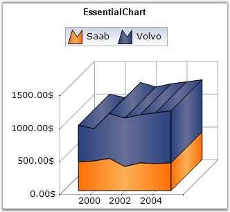

Stacking Area Charts are similar to regular area charts except that the y values stack on top of each other in the specified series order. This helps visualize the relationship of parts to the whole.
The following image shows a sample Stacking Area Chart.

Figure 56: Chart displaying Stacking Area Series in 3D
Chart Details
|
Details | |
|
Number of Y values per point |
1 |
|
Number of Series |
One or More |
|
Cannot be Combined with |
Pie, Bar, Stacked Bar charts, Polar and Radar. |
Stacking area series can be added to the chart using the following code.
|
[C#]
// Create chart series and add data points into it. ChartSeries series = this.ChartWebControl1.Model.NewSeries("Series Name",ChartSeriesType.StackingArea); series.Points.Add(0, 1); series.Points.Add(1, 3); series.Points.Add(2, 4);
ChartSeries series2 = this.ChartWebControl1.Model.NewSeries("Series Name",ChartSeriesType.StackingArea); series2.Points.Add(0, 2); series2.Points.Add(1, 1); series2.Points.Add(2, 1);
// Add the series to the chart series collection. this.ChartWebControl1.Series.Add(series); this.ChartWebControl1.Series.Add(series2); |
|
[VB.NET]
' Create chart series and add data points into it. Dim series As ChartSeries = Me.ChartWebControl1.Model.NewSeries("Series Name", ChartSeriesType.StackingArea) series.Points.Add(0, 1) series.Points.Add(1, 3) series.Points.Add(2, 4)
Dim series2 As ChartSeries = Me.ChartWebControl1.Model.NewSeries("Series Name", ChartSeriesType.StackingArea) series2.Points.Add(0, 2) series2.Points.Add(1, 1) series2.Points.Add(2, 1)
' Add the series to the chart series collection. Me.ChartWebControl1.Series.Add(series) Me.ChartWebControl1.Series.Add(series2) |
See Also